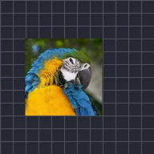

Time Quantization

Lets time pass in steps for this layer, like a lower frame rate.
Frame Rate: makes the layer move at a lower frame rate, which gives a choppy, stop-motion look. It works on video, shapes, text and groups. Set how many frames per second the layer should show: the lower the number, the choppier the movement.
- 8 to 12 frames per second gives a hand-drawn, stop-motion feel.
- Animate the number to switch smoothly between choppy and smooth movement.
- Put the effect on a group to make everything inside it choppy together.
Settings
| Setting | Type | Range | Default |
|---|---|---|---|
| Steps/sec | Number | 0.1 to 120 | 5 |